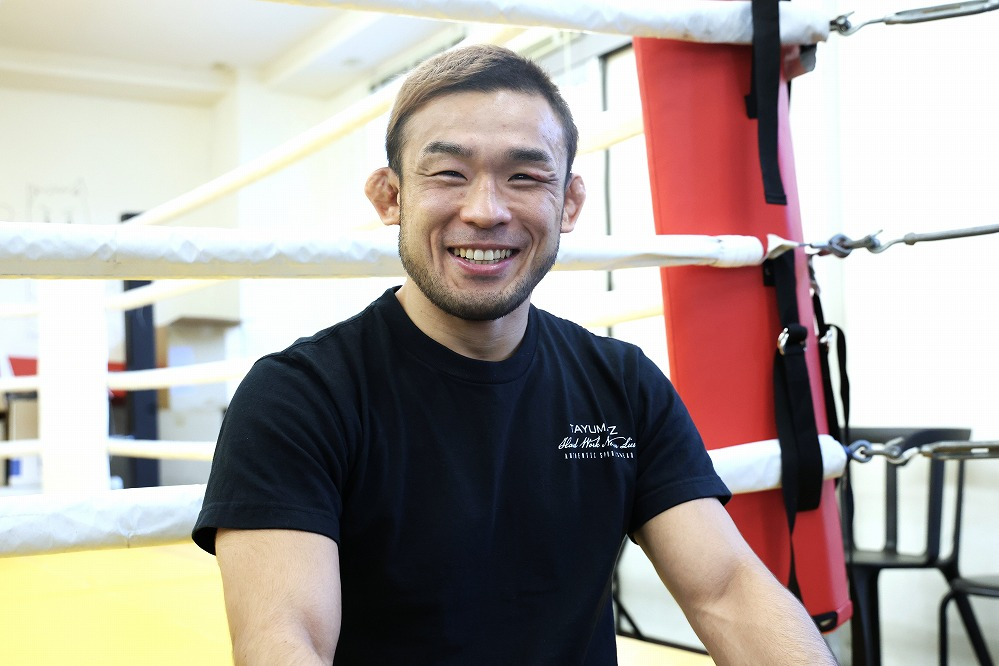
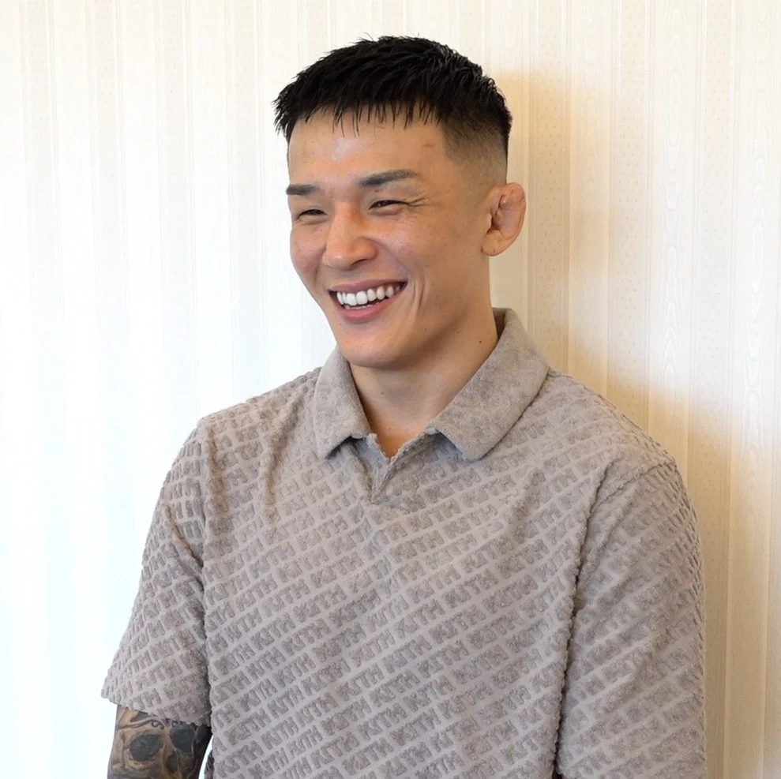

RIZINファイターの身体づくりを支える Fighters' Choice
日常的に体重と栄養を管理するプロ格闘家たち。その食事に、RIZIN餃子は選ばれています。

扇久保 博正
「減量中って、食事がどうしても作業になるんです。これは焼くだけでタンパク質が摂れて、しかも普通にうまい。冷凍庫に常備してます」※コメントは仮です

鈴木 千裕
「試合前は特に食事を絞るんですけど、我慢ばっかりだと続かない。この餃子は数字がちゃんとしてるのに、飯として楽しみになるのがすごい」※コメントは仮です

萩原 京平
「トレーニング後はプロテインより飯派。焼くだけ4分でタンパク質47gは、正直ありがたいです。ニンニクなしを選べるのも計量前にいい」※コメントは仮です